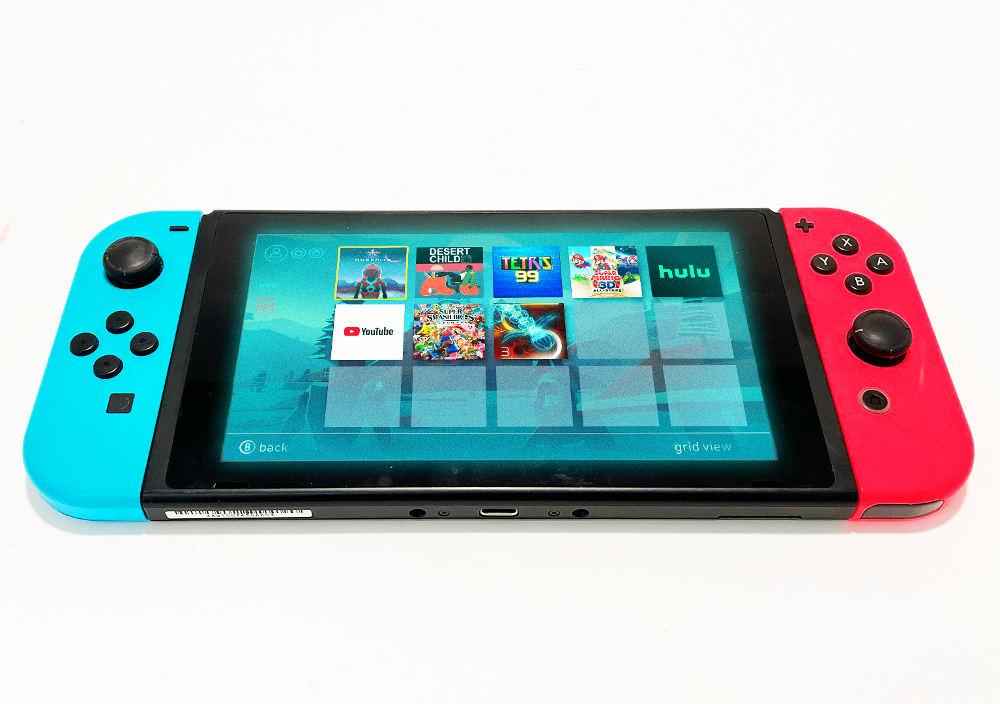
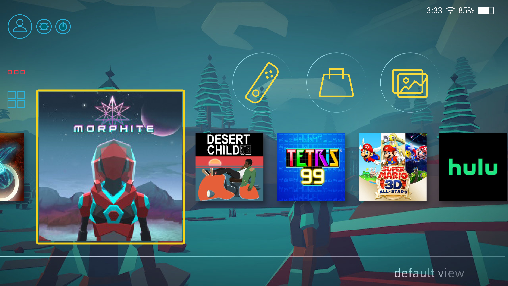
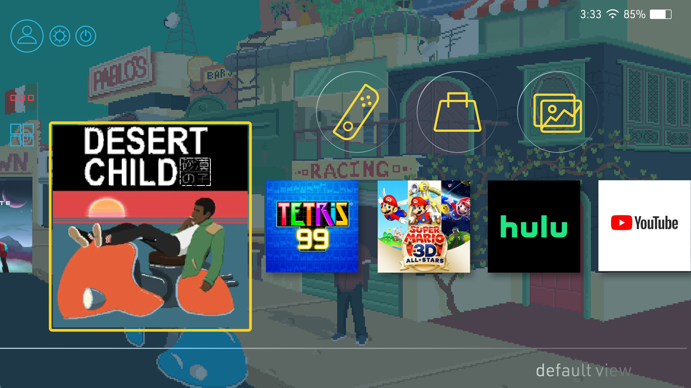
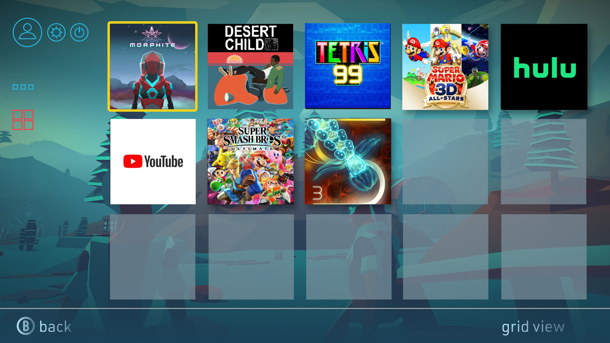
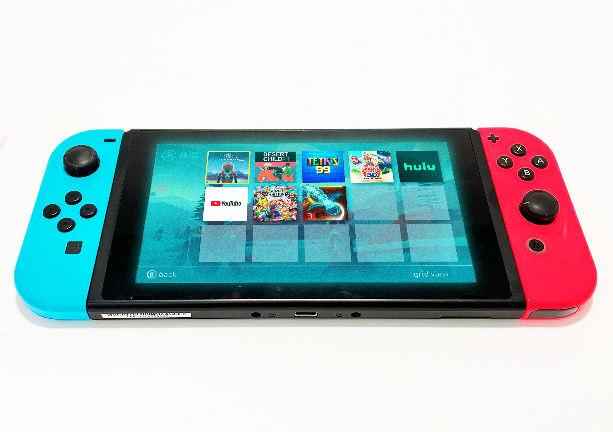
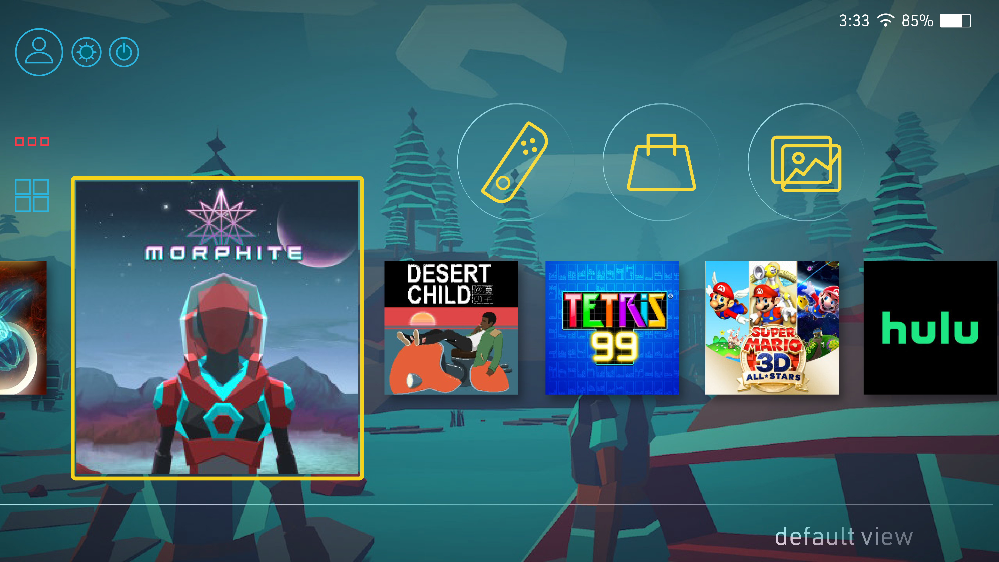
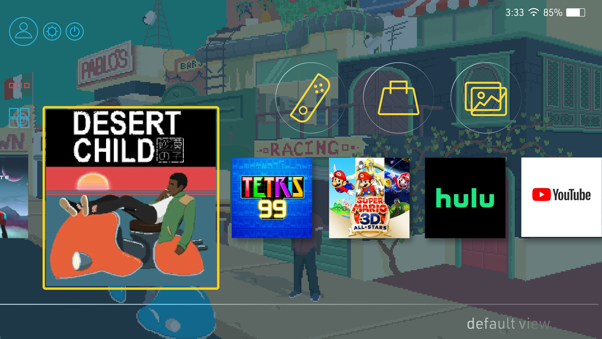
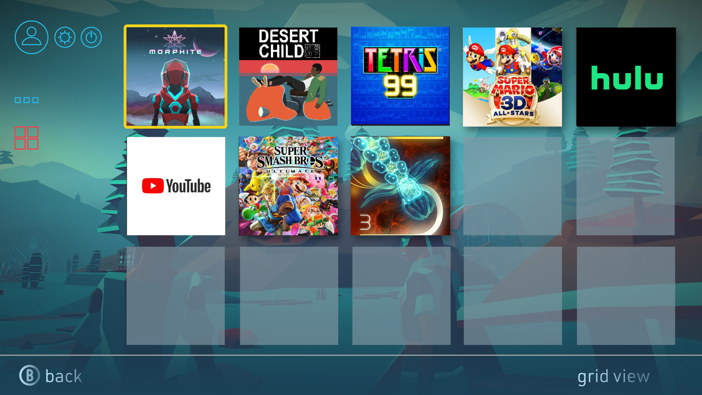

Galen Aubrey Hicks
Nintendo Switch screen redesign
For this project I was tasked to redesign the interface of the Nintendo Switch lock screen and home screen. Some of the main changes I made were to:
- Decrease the buttons on the home screen to the most essential actions
- Add a grid view so you can view more of your software at once
- Make the user's last played game and online store accessible from the lock screen
- Enable the player to see a preview of the gameplay when you hover on that specific game
 






